객체 선택 (U3dSelect)
목차
이 장에서는 GeOnDT가 마우스로 지정한 위치나 범위에서 3D 객체를 찾고, 찾은 객체를 외곽선이나 색상으로 표시하는 선택 도구입니다.
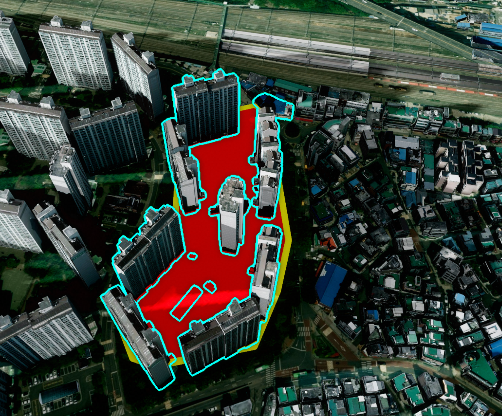
1. 선택 기능 이해하고 시작하기
- 3D 객체: 3D 장면 안에서 따로 선택하거나 제어할 수 있는 건물, 시설물, 모델 등의 대상입니다.
- 레이어(layer): 용도나 종류가 같은 3D 객체를 묶어서 관리하는 그룹입니다.
targetLayer로 검색할 레이어를 제한할 수 있습니다.- 피킹(picking): 화면에서 클릭하거나 그린 범위를 3D 장면에 적용해, 조건과 교차하는 객체를 찾는 과정입니다.
point모드에서는 카메라에서 클릭 지점을 향해 보이지 않는 광선(ray)을 보내 가장 먼저 만나는 객체를 찾고, 다른 모드에서는 사용자가 그린 도형이나 화면 범위와 교차하는 객체를 찾습니다.- 하이라이트(highlight): 선택한 객체를 쉽게 알아볼 수 있도록 외곽선이나 색상으로 강조하는 표시입니다.
API
new GeOnDT.select.U3dSelect(opt) : 객체 선택기를 생성하는 생성자
매개변수
opt(object) : 선택 옵션. 생략 가능opt.mode(string) : 선택 범위 입력 방식.point,area,line,circle,box중 하나. 기본값:pointopt.selectType(string) : 선택 표시 방식.outline또는color. 기본값:outlineopt.exceptTexture(boolean) :color방식에서 선택 표시 중 객체 표면에 입힌 이미지인 텍스처를 제외할지 여부. 기본값:falseopt.targetLayer(string[]) : 검색할 레이어 이름 목록. 생략하면 전체 선택 대상 레이어를 검사opt.auto(boolean) : 검색 결과의 선택과 하이라이트를 자동 처리할지 여부. 기본값:true
선택은 다음 순서로 처리됩니다.
- 사용자가 화면을 클릭하거나 선택 범위를 그립니다.
U3dSelect가 입력 위치 또는 범위와 교차하는 3D 객체를 찾습니다.auto: true이면 검색 결과를 선택 목록에 넣고 하이라이트를 적용합니다.change와end이벤트에서 선택 결과와 입력 범위를 확인합니다.
API
U3dSelect.setApp(app) : 선택기가 동작할 U3dApp을 연결하는 함수
매개변수
app(U3dApp) : 선택 기능을 사용할 앱. 필수
API
U3dApp.addSelect(select) : select.setApp(app)을 호출해 선택기를 앱에 연결하는 함수
매개변수
select(U3dSelect) : 앱에 연결할 선택기. 필수
API
U3dSelect.active() : 마우스 입력을 받을 수 있도록 선택 기능을 활성화하는 함수
1. 기본 선택기 만들기
아래 예제는 객체를 한 번 클릭해 선택하고, 선택이 끝났을 때 결과를 확인하는 가장 단순한 구성입니다.
const select = new GeOnDT.select.U3dSelect({
mode: 'point',
selectType: 'outline',
});
// 선택기가 사용할 앱을 반드시 연결합니다.
select.setApp(app);
// 이벤트를 통해 선택된 객체를 반환받습니다.
select.on('end', (event) => {
console.log('선택된 객체:', event.data);
});
select.active();
select.setApp(app) 대신 app.addSelect(select)을 호출해도 앱을 연결할 수 있습니다. 연결이 끝난 뒤 active()를 호출해야 화면에서 선택할 수 있습니다.
2. 선택 모드 설정하기
선택 모드는 사용자가 검색 범위를 만드는 방법을 결정합니다. setMode()로 실행 중에도 모드를 바꿀 수 있습니다.
| 모드 | 사용자 입력 | 객체를 찾는 범위 | 좌표 기준 | 입력 완료 |
|---|---|---|---|---|
point | 객체 위를 클릭 | 클릭 지점에서 만나는 객체 | 지리 좌표 | 클릭 즉시 |
area | 경계점을 차례로 클릭 | 지도 표면에 그린 다각형과 교차하는 객체 | 지리 좌표 | 더블클릭 |
line | 선의 점을 차례로 클릭 | 지도 표면에 그린 선과 교차하는 객체 | 지리 좌표 | 더블클릭 |
circle | 첫 클릭으로 중심을 정하고 다음 클릭으로 반지름을 지정 | 지도 표면에 그린 원과 교차하는 객체 | 지리 좌표 | 더블클릭 |
box | 화면을 드래그 | 화면의 사각형 안에 보이는 객체 | 정규화 화면 좌표 | 마우스 버튼 놓기 |
area와box는 모두 여러 객체를 고를 수 있지만 기준이 다릅니다.area는 좌표를 찍는 지도 표면에 여러 점을 이은 자유로운 도형인 다각형을 그리고, 그 도형과 교차하는 객체를 찾습니다.box는 현재 보이는 화면 위에 사각형을 그리고, 카메라에서 그 사각형 안에 들어오는 객체를 찾습니다.point모드에서Shift키를 누르지 않고 새 객체를 클릭하면 이전 선택이 해제됩니다.Shift키를 누른 채 클릭하면 기존 선택에 객체를 추가할 수 있습니다. 이Shift누적 선택 안내는point모드에만 해당합니다.
API
U3dSelect.setMode(mode) : 선택 모드를 변경하는 함수
매개변수
mode(string) :point,area,line,circle,box중 하나. 필수
모드를 변경하면 기존 선택 목록과 그려진 선택 범위가 함께 초기화됩니다.
선택 결과를 보관해야 한다면 setMode()를 호출하기 전에 getSelected()로 목록을 저장합니다.
1. 실행 중 선택 모드 변경하기
select.setMode('point');
select.setMode('area');
select.setMode('line');
select.setMode('circle');
select.setMode('box');
아래 이미지에서 빨간색 또는 노란색 도형과 가는 선은 사용자가 지정한 검색 범위이고, 청록색 외곽선은 검색 결과로 선택된 객체입니다. 실제 색상은 선택기의 스타일 설정에 따라 달라질 수 있습니다.
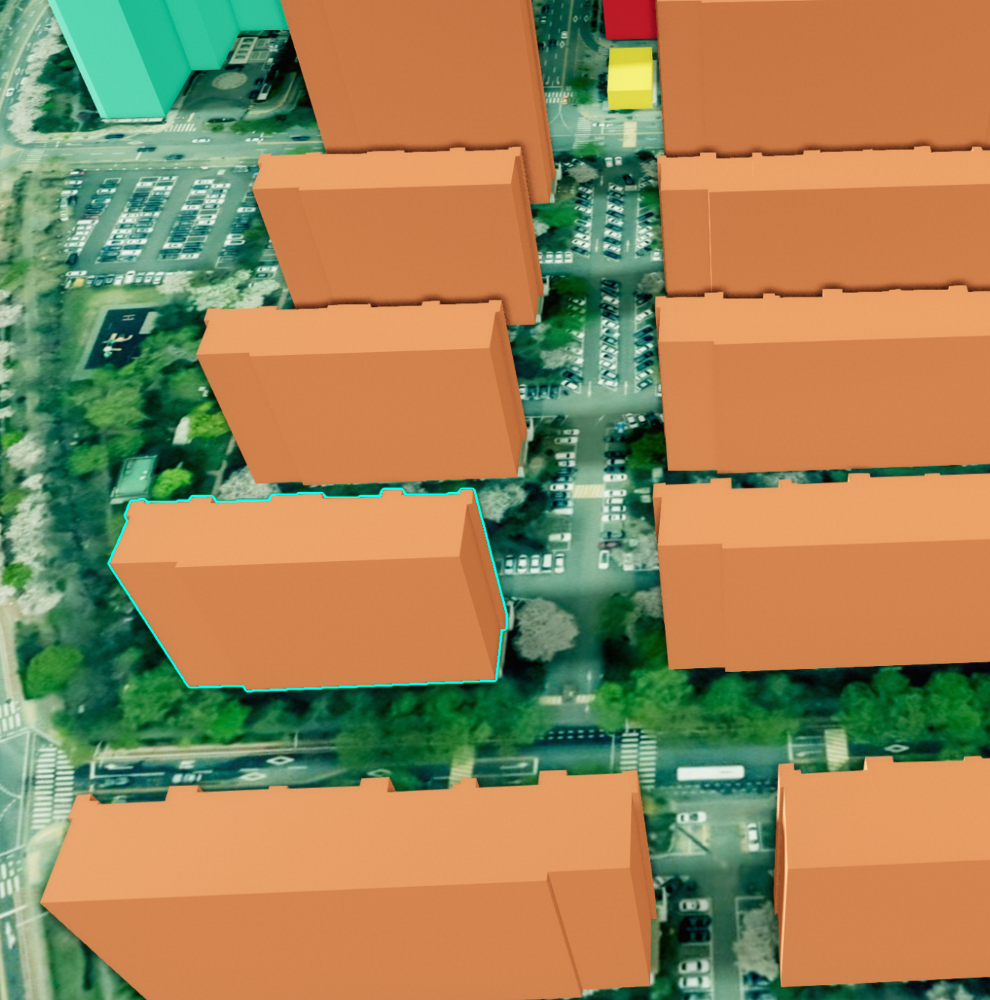
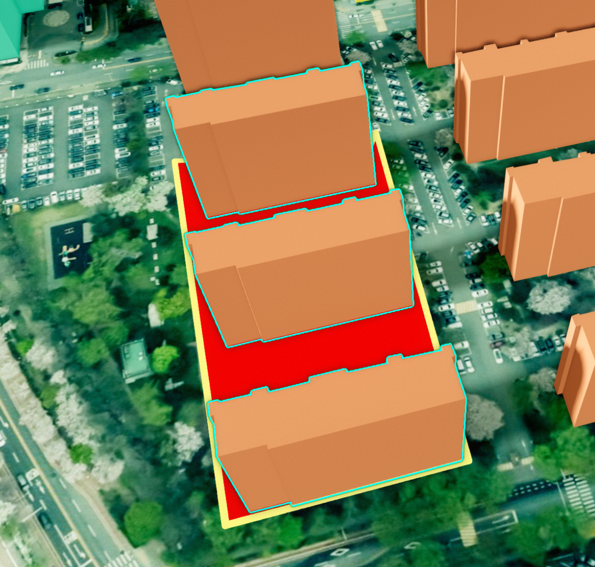
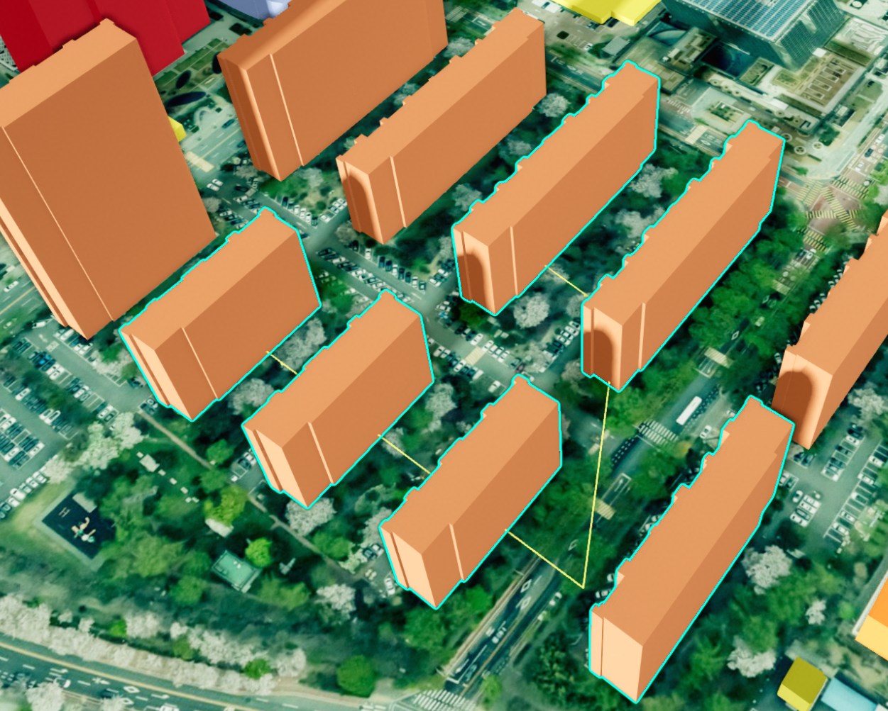
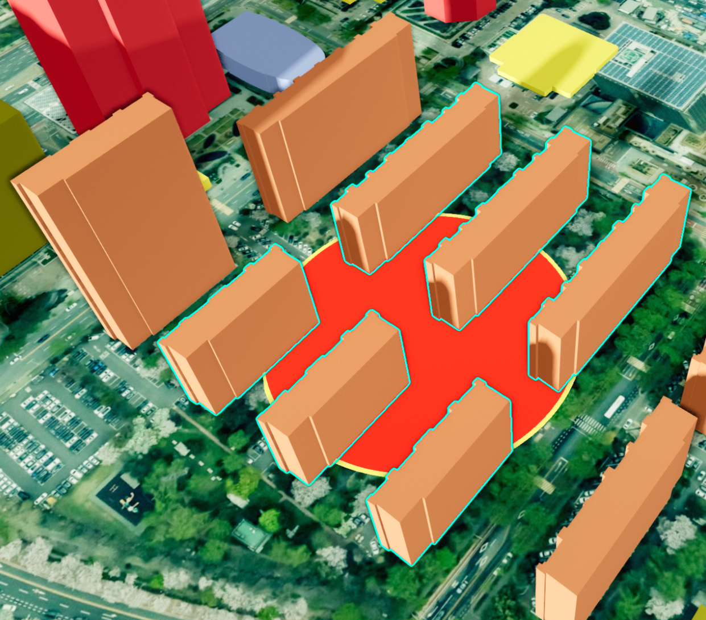
3. 선택 결과와 이벤트 확인하기
선택 동작 중에는 start, change, end 이벤트로 진행 상태와 결과를 받을 수 있습니다.
| 이벤트 | 발생 시점 | 주로 확인할 값 |
|---|---|---|
start | 클릭 기반 모드에서 각 입력 지점의 검색을 시작하기 전 | type, data: null, target |
change | 클릭 지점이나 드래그 범위가 바뀌어 검색 결과가 갱신될 때 | data, work, target |
end | 클릭 선택, 더블클릭 범위 확정 또는 박스 드래그가 끝났을 때 | data, work, target |
현재 구현에서 box 모드에는 start가 발생하지 않습니다. 모든 모드에 공통된 결과 처리가 필요하면 change와 end를 사용합니다.
이벤트 객체의 주요 속성은 다음과 같습니다.
type(string) : 발생한 이벤트 이름data(USelect[] | null) :start에서는null.change와end에서는auto: true일 때 현재 선택된 객체 목록,auto: false일 때 검색된 후보 객체 목록work(object | undefined) : 선택 모드와 입력 위치를 담은 작업 정보. 선택 조건이 아직 없거나 클릭한 곳에 결과가 없으면 없을 수 있음target(U3dSelect) : 이벤트를 발생시킨 선택기
여기서 USelect는 선택 결과로 반환될 수 있는 모델, 메시, 컴포넌트 등의 3D 객체 타입을 통칭합니다. 실제 객체 타입은 선택한 레이어의 종류에 따라 달라질 수 있습니다.
work는 선택 동작을 기록하거나 같은 범위를 다시 처리할 때 사용하는 정보입니다.
work.type(string) : 선택에 사용한 모드work.points(object[]) : 선택 범위를 구성하는 입력 지점 목록work.worlds(object[]) : 현재point모드에서 광선과 객체가 만난 3D 위치 목록
| 좌표 종류 | 사용 위치 | 값의 의미 |
|---|---|---|
| 지리 좌표 | point, area, line, circle의 work.points | x는 경도, y는 위도, z는 높이인 실제 지도 위치(EPSG:4326) |
| 월드 좌표 | point의 work.worlds | 3D 엔진이 거리와 위치 계산에 사용하는 장면 내부 좌표(EPSG:3857) |
| 정규화 화면 좌표 | box의 work.points | 캔버스 크기와 관계없이 -1부터 1 사이로 나타낸 드래그 시작점과 끝점 |
box 모드의 work.points는 지도 위의 위치가 아니라 화면 안의 위치 정보입니다.
화면 가운데는 {normalizedX: 0, normalizedY: 0}, 왼쪽 아래는 {normalizedX: -1, normalizedY: -1}, 오른쪽 위는 {normalizedX: 1, normalizedY: 1}로 표현됩니다.
따라서 이 값을 위도와 경도처럼 지도 좌표로 바로 사용하지 않도록 주의합니다.
API
U3dSelect.on(type, listener) : 선택 이벤트 수신 함수를 등록하는 함수
매개변수
type(string) :start,change,end중 수신할 이벤트 이름. 필수listener(function) : 이벤트가 발생했을 때 실행할 함수. 필수
1. 선택 진행 상태와 결과 받기
select.on('start', (event) => {
console.log('검색 시작:', event.type, event.data);
});
select.on('change', (event) => {
console.log('현재 결과:', event.data);
console.log('현재 입력 범위:', event.work);
});
select.on('end', (event) => {
console.log('최종 결과:', event.data);
console.log('확정된 입력 범위:', event.work);
});
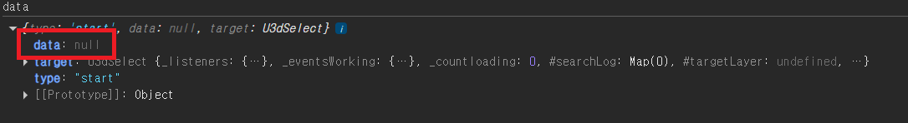
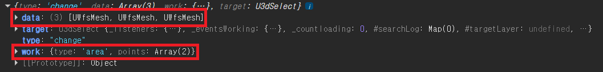
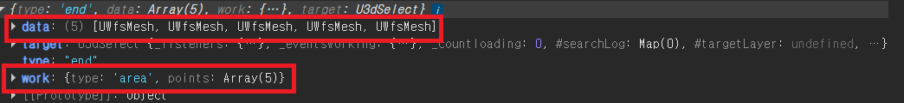
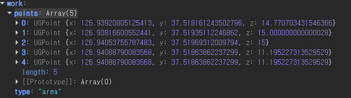
4. 선택 표시와 상태 정리하기
선택한 객체는 outline 또는 color 방식으로 강조할 수 있습니다.
outline: 원래 재질을 유지하면서 객체의 바깥 윤곽선을 표시합니다.color: 객체의 표면 색상과 투명도를 바꿉니다.
API
U3dSelect.setSelectType(type) : 선택 표시 방식을 변경하는 함수
매개변수
type(string) :outline또는color. 필수
API
U3dSelect.setSelectedColor(color, opacity) : 선택 표시의 색상과 투명도를 변경하는 함수
매개변수
color(ColorRepresentation) : 16진수 숫자나 CSS 색상 문자열로 표현한 선택 표시 색상. 예:0xff0000,'#ff0000'opacity(number) : 선택 표시 투명도.0부터1사이의 값
API
U3dSelect.clearHighlights() : 선택 목록은 유지하고 화면의 하이라이트만 제거하는 함수
1. 선택 표시 방식 바꾸기
이미 선택된 객체의 표시 방식을 바꿀 때는 기존 하이라이트를 먼저 지운 뒤 새 방식을 적용합니다. setSelectedColor()는 color의 표면 색상뿐 아니라 outline의 외곽선 색상에도 사용됩니다.
// 선택 객체를 빨간색으로 채워 표시합니다.
select.clearHighlights();
select.setSelectType('color');
select.setSelectedColor(0xff0000, 0.8);
// 선택 객체를 빨간색 외곽선으로 표시합니다.
select.clearHighlights();
select.setSelectType('outline');
select.setSelectedColor(0xff0000, 1);
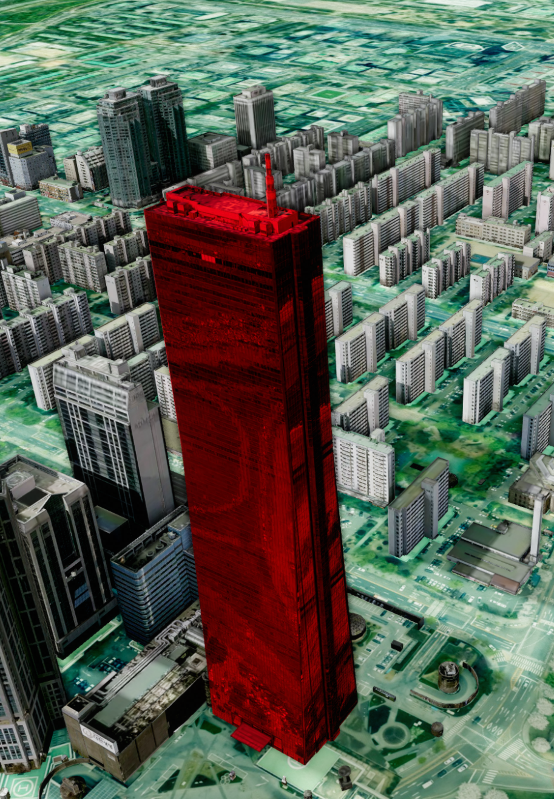
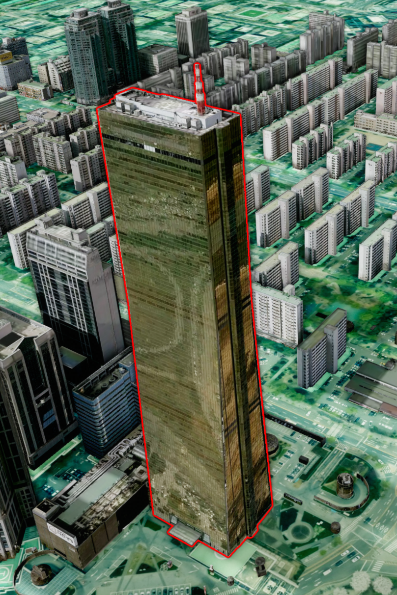
API
U3dSelect.clearSelect() : 현재 선택 목록과 객체 하이라이트를 제거하는 함수
API
U3dSelect.clear() : 선택 목록, 하이라이트, 그려진 선택 범위를 모두 초기화하는 함수
API
U3dSelect.deactive() : 선택기의 마우스 입력을 비활성화하는 함수
API
U3dSelect.remove() : 선택 상태와 이벤트를 정리하고 선택기를 폐기하는 함수
선택 결과를 지우거나 기능 사용을 끝낼 때는 목적에 맞는 정리 API를 사용합니다.
| API | 선택 목록과 하이라이트 | 그려진 선택 범위 | 마우스 입력 | 다시 사용 가능 여부 |
|---|---|---|---|---|
clearSelect() | 제거 | 유지 | 유지 | 가능 |
clear() | 제거 | 제거 | 유지 | 가능 |
deactive() | 완료된 결과는 유지될 수 있음 | 완료된 범위는 유지될 수 있음 | 중지 | active()로 재개 가능 |
remove() | 제거 | 제거 | 중지 | 제거된 선택기는 다시 사용하지 않음 |
deactive()는 API에 정의된 실제 함수 이름입니다.deactivate()로 작성하지 않도록 주의합니다.- 일시 중지에는
deactive(), 화면의 선택 표시까지 초기화하려면clear(), 선택기를 완전히 폐기하려면remove()를 사용합니다.
2. 선택 해제, 일시 중지, 제거하기
아래 호출은 순서대로 모두 실행하는 예제가 아닙니다. 필요한 작업 하나를 골라 사용합니다.
select.clearSelect(); // 객체 선택만 해제
select.clear(); // 선택 객체와 입력 범위를 모두 초기화
select.deactive(); // 입력을 일시 중지
select.remove(); // 선택기를 완전히 제거
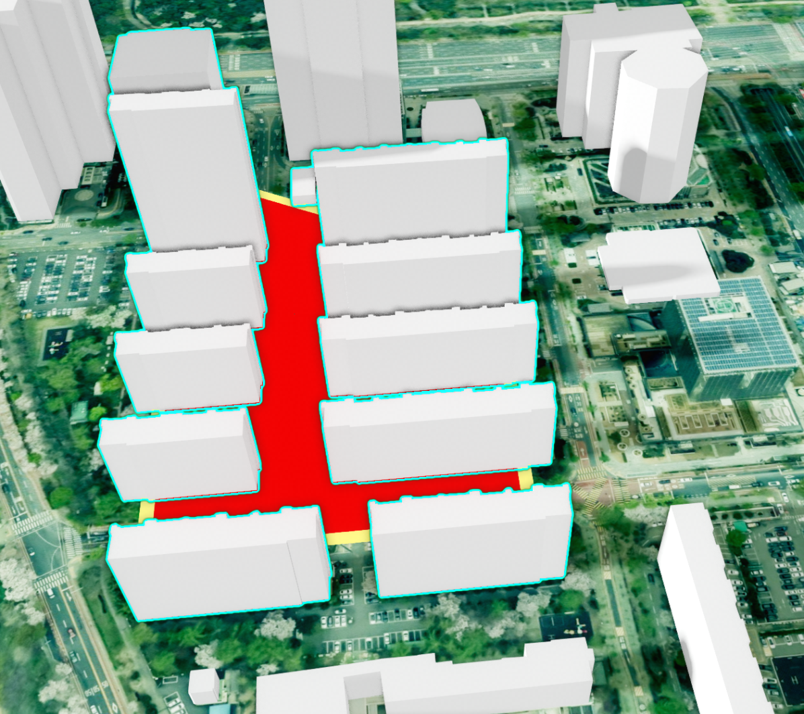
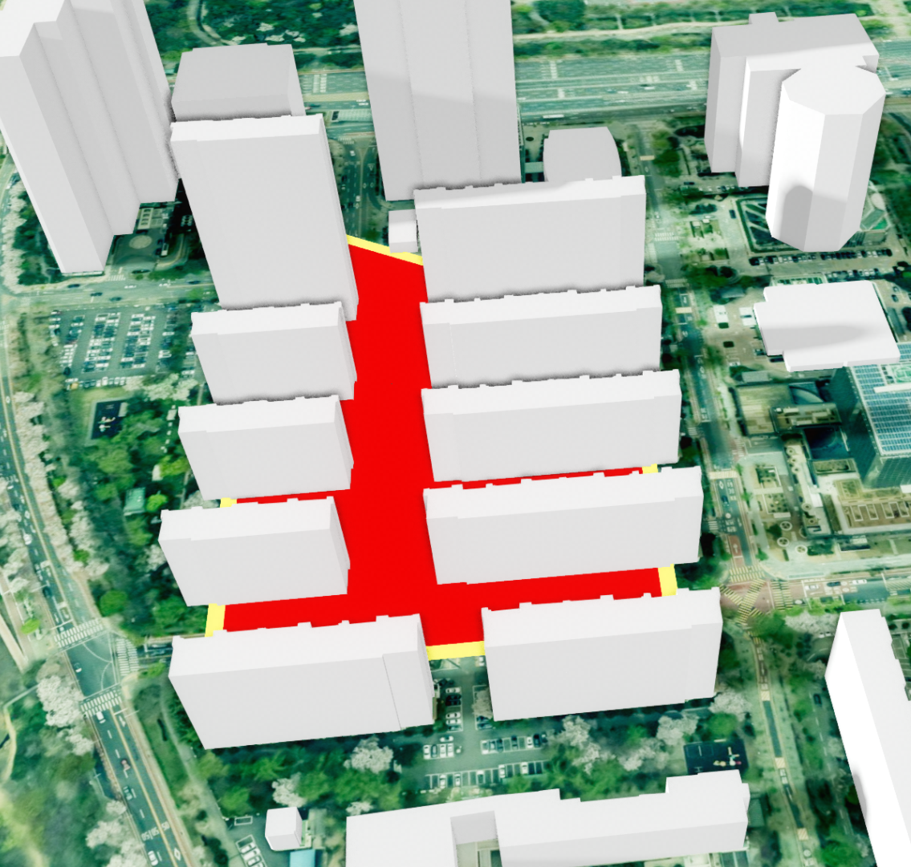
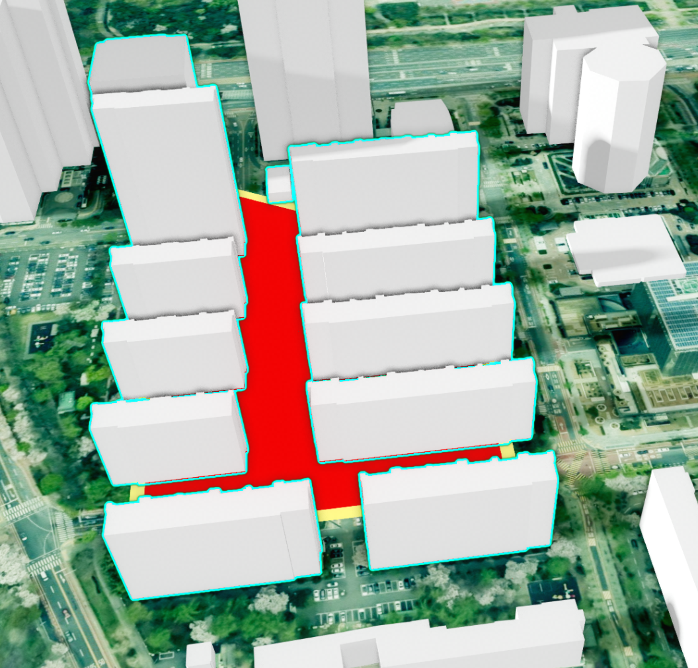
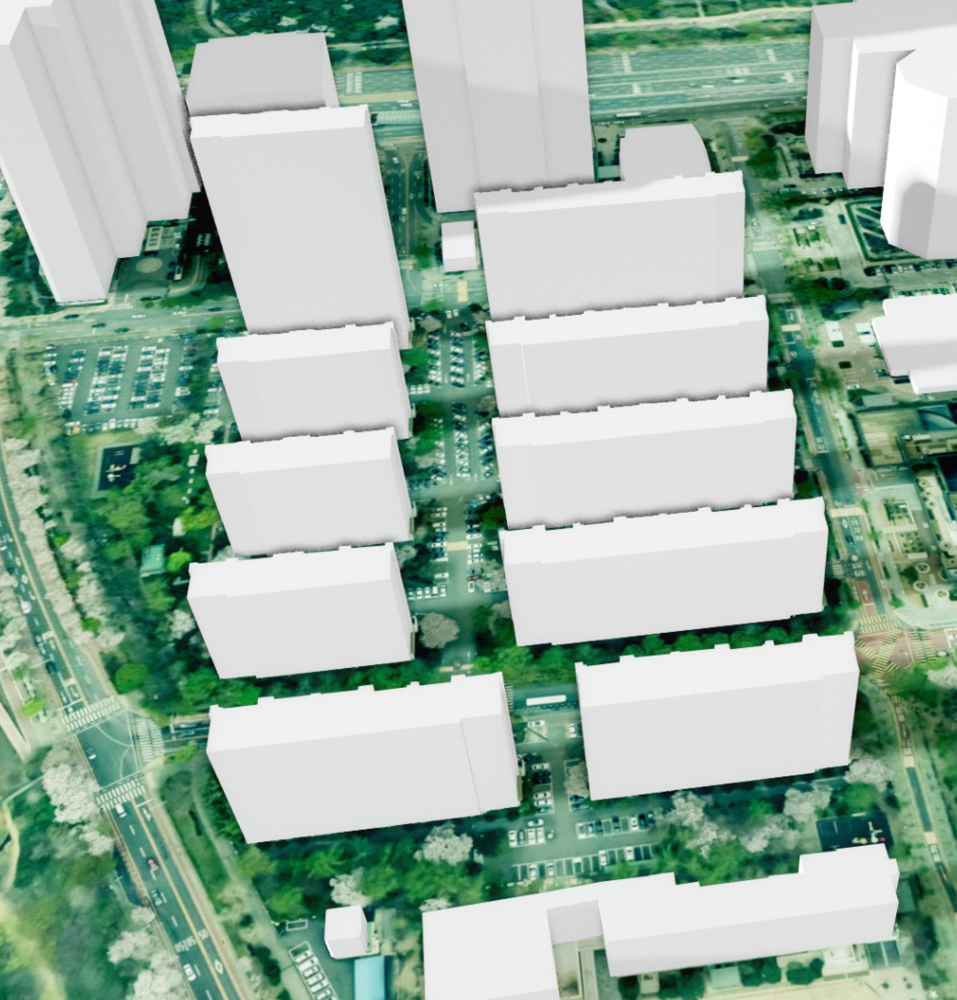
5. 대상 제한과 직접 선택하기
targetLayer는 선택 결과가 아니라 검색 범위 지정 옵션입니다.
예를 들어 건물 레이어만 지정하면 3D사물 또는 배경 레이어는 피킹 검사에서 제외됩니다.
레이어 이름은 app.getLayerByName(layerName)으로 조회할 수 있는 실제 이름과 같아야 합니다.
auto는 검색 후보를 최종 선택으로 확정하는 주체를 정합니다.
| 설정 | event.data | 선택 목록과 하이라이트 |
|---|---|---|
auto: true | 현재 선택된 객체 목록 | U3dSelect가 자동 처리 |
auto: false | 입력 범위에서 검색된 후보 객체 목록 | 애플리케이션이 후보를 고른 뒤 직접 처리 |
auto: false는 권한이나 객체 속성에 따라 일부 후보만 선택해야 하거나, 겹친 후보 중 하나만 고르는 규칙이 필요할 때 사용합니다.
API
U3dSelect.addTargetLayer(layerName) : 검색 대상 레이어를 추가하는 함수
매개변수
layerName(string) : 추가할 레이어 이름. 필수
API
U3dSelect.removeTargetLayer(layerName) : 검색 대상 레이어를 제외하는 함수
매개변수
layerName(string) : 제외할 레이어 이름. 필수
API
U3dSelect.addSelected(object) : 객체를 선택 목록에 직접 추가하고 하이라이트를 적용하는 함수
매개변수
object(USelect | USelect[]) : 선택할 객체 또는 객체 목록. 필수
반환값
return(Promise<void>) : 선택 추가 작업의 완료 상태
API
U3dSelect.removeSelected(object) : 지정한 객체 하나를 선택 목록에서 제거하는 함수
매개변수
object(USelect) : 선택을 해제할 객체. 필수
API
U3dSelect.getSelected() : 현재 최종 선택 목록을 반환하는 함수
반환값
return(USelect[]) : 현재 선택된 객체 목록
1. 검색할 레이어를 실행 중에 변경하기
const select = new GeOnDT.select.U3dSelect({
mode: 'point',
targetLayer: ['buildingLayer'],
});
select.setApp(app);
// 시설물 레이어도 검색 대상에 추가합니다.
select.addTargetLayer('facilityLayer');
// 건물 레이어는 검색 대상에서 제외합니다.
select.removeTargetLayer('buildingLayer');
select.active();
2. 후보를 검사한 뒤 직접 선택하기
아래 예제의 userData.selectable은 애플리케이션이 객체에 미리 저장해 둔 사용자 정의 값입니다.
프로젝트에서 사용하는 공개 속성 구조에 맞게 isSelectable()의 조건만 바꿉니다.
const manualSelect = new GeOnDT.select.U3dSelect({
mode: 'area',
auto: false,
selectType: 'outline',
targetLayer: ['buildingLayer'],
});
manualSelect.setApp(app);
function isSelectable(object) {
return object?.userData?.selectable === true;
}
manualSelect.on('end', async (event) => {
const candidates = Array.isArray(event.data) ? event.data : [];
const approvedObjects = candidates.filter(isSelectable);
manualSelect.clearSelect();
if (approvedObjects.length > 0) {
await manualSelect.addSelected(approvedObjects);
}
console.log('최종 선택 객체:', manualSelect.getSelected());
});
manualSelect.active();
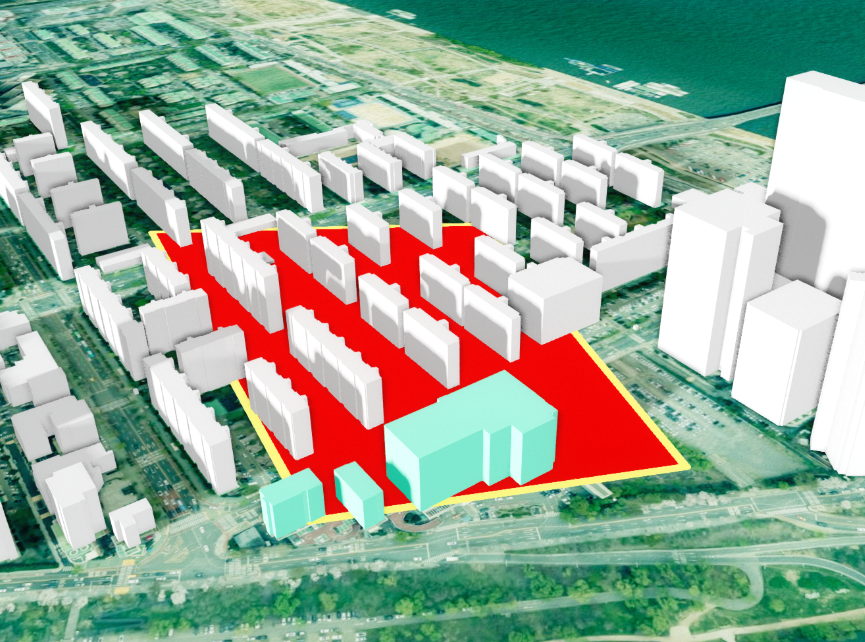